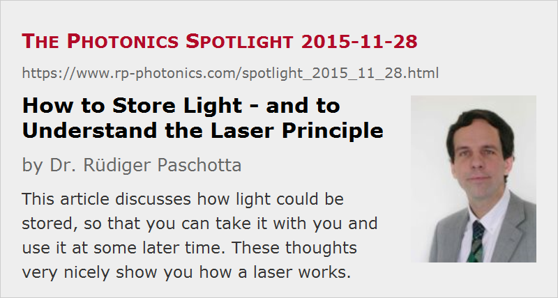

How to Store Light – and to Understand the Laser Principle
Posted on 2015-11-28 as a part of the Photonics Spotlight (available as e-mail newsletter!)
Permanent link: https://www.rp-photonics.com/spotlight_2015_11_28.html
Author: Dr. Rüdiger Paschotta, RP Photonics Consulting GmbH
Abstract: This article discusses how light could be stored, so that you can take it with you and use it at some later time. These thoughts very nicely show you how a laser works.

With this article, I want to show you a nice way to understand the basic operation principles of lasers – either for your own pleasure or when you try to explain it to beginners.
We begin by asking a seemingly unrelated question: How can we store light? Could we put some amount of light into some suitable kind of bucket, with which we could carry it around and use it later on?
An essential problem with storing light is that it moves away so fast. A relatively straightforward idea is to confine the light with some mirrors, which prevents it from escaping. In the simplest case, we would just use two highly reflecting mirrors in parallel, so that a light beam can be captured between those:
Such an optical arrangement is called an optical resonator. Ideally, the light would be perfectly reflected by the mirrors and circulate there forever.
One can easily imagine a number of problems with that approach, which however we will solve step by step.
The Divergence Problem
The first concern is that during many round trips the circulating light beam would diverge more and more, i.e., develop a larger and larger beam diameter, so that eventually it reaches the edges of the mirrors, and part of the light gets lost.
There is a simple solution to that: just make one or both mirrors slightly curved, so that the circulating light beam is constantly refocused:
With the proper amount of refocusing, the natural tendency of the beam to diverge can be fully compensated.
You might think that it is difficult to obtain exactly the right amount of refocusing. However, within some limits you can just choose some mirror curvatures, and there will always be a so-called resonator mode fitting to the setup. (Actually, there are normally many such resonator modes, having different intensity profiles.)
Isn't the Alignment Overly Critical?
One might think that perfect alignment of the mirrors is a prerequisite for storing the light over longer times. This is not the case, however: if you slightly tilt one mirror, for example, there is a correspondingly shifted version of our light beam which can still stay on that position for a long time. You may even slightly change the alignment while the beam is in the resonator, and the beam will be able to adjust to the new mirror positions as long as the movements are sufficiently slow – which is easy to guarantee, given that light is much faster than you can move any solid parts. Only if you misalign the resonator too much, the beam will reach the edges of the mirrors, and this results in strong power losses.
Doesn't the Light Fade Away?
This is the most serious concern: in each round-trip, the light will lose some of its energy, since the mirrors can never be perfectly reflecting, and there might be further power losses e.g. by scattering in the air. This problem becomes quite severe due to the very high velocity of light. For example, if the spacing of the mirrors is 1.5 m, the round-trip time will be only 10 ns, so that the light beam makes 100 million round trips per second. So even if you use so-called supermirrors with an excellent reflectivity of 99.999999%, within one second you will lose most of the circulating light energy. If you use ordinary laser mirrors with a reflectivities of 99.9%, it will only take the order of 100 round trips to lose most of the energy – these will be completed within only a microsecond. If you make the resonator shorter, that fading away of the energy happens even faster. Using a very long resonator would help in principle, but is not very practical.
This problem can be solved with the following trick: between the mirrors, put some medium which can not only transmit the light, but also amplify its power. For the moment, just imagine that you have some magic kind of crystal, which could amplify the light power by 10% in a single pass. That would be sufficient to compensate losses of 10% on each mirror, if no other losses occur (e.g. during propagation in air).
Of course, the balance of optical gain (amplification factor) and losses is then quite delicate:
- If the gain of your amplifier a slightly too low, there will still be some net losses per round trip, and the light energy will soon be lost.
- If the gain is slightly too high, there will be a positive net gain per round trip, and as a result the circulating optical power will rise exponentially. Given the very small round-trip time, the optical power might reach enormously high levels within a short time.
Actually, there is no risk that you will be killed by a disastrous power level arising from that setup, since there is no amplifier which can achieve a certain gain for arbitrarily high input powers. Any amplifier will exhibit some kind of gain saturation, i.e., its gain will drop under such conditions. If the circulating optical power rises and rises, the gain will eventually drop to the level which is needed to just keep the circulating power constant. It should not take long to reach that steady state, again because the light circulates so fast.
It has not yet been explained how such a magic amplifying crystal could be obtained. I will discuss that in detail in the next posting of the Photonics Spotlight. For now, I just tell you that some amount of power is required to operate such an amplifier; after all, it constantly adds energy to the optical field. If it is a transparent crystal, which is not electrically conducting, the only reasonable way to supply such power is to shine light on it – for example, from the side. You should then have something in the crystal which can absorb that pump light and utilize it to provide the required gain.
How to Get the Light In?
There is only one problem remaining: how can we initially get the light in? It is of course not realistic to think that you could take off one of the mirrors, shine some light in and then quickly enough put the mirror on again. Also, you cannot put an ordinary light source into the resonator without blocking the circulating light.
Fortunately, you actually don't need to do anything to solve that problem, because you already have a light source in the resonator! Just turn on your optical amplifier, and it will produce a tiny amount of light even when there is nothing yet to be amplified; that phenomenon is called fluorescence. Beginning with that very small amount of light, the amplifier will now quickly increase the power until the above explained steady state is reached.
How to Make This Device Useful?
We have now managed to find a way for storing light over long times – even though we constantly need to supply energy in order to compensate for the permanent losses. In this sense, it is like a not perfectly insulated storage tank for hot water, which you permanently need to heat in order to keep it hot.
In the current form, however, the device is not particularly useful: there is some light captured between the mirrors, but you cannot do much with it. For example, you cannot put some absorbing workpiece into your resonator in order to irradiate it, since that would simply switch off the device. The thing becomes much more useful with a small modification: instead of highly reflecting mirrors, use at least one which transmits a certain percentage of the circulating power – for example, 10% of it. If the other mirror is highly reflecting, you will have about 10% power loss for the circulating light per round trip – which can be compensated if the amplifier can provide that amount of gain. Through that partially reflecting mirror, you now obtain an output light beam which you can use.
The Laser
The device which we have got has (unfortunately) been invented and named already by others: it is called a laser! In the following, we will discuss some of its basic properties.
Threshold and Slope Efficiency
In order to obtain a substantial output power, you want to use an output coupling mirror having a substantial transmission. Only, you should not overdo that, because the more transmission you have, the lower will be the reflectivity and the higher the round-trip loss of the resonator will be; if you couple out too much, the available amplifier gain will no longer be sufficient, and the device will not work.
If you work with a fixed mirror set and vary the amount of pump power supplied to the amplifier, you will get the following:
- Below a certain amount of pump power, which is called the laser threshold power, the gain is too low to compensate the losses. You will then obtain nearly no output at all – only a very weak amount of fluorescence light, much of which is emitted in all sorts of directions.
- Above the laser threshold, most of the emitted light is contained in the mentioned output beam, although a little power is still emitted in all directions. For higher pump powers, the output power often rises about linearly. The slope of that line is called the slope efficiency.
High Beam Quality
In many cases, it is possible to obtain laser emission in a single spatial mode of the laser resonator. This results in a high spatial coherence and a very high beam quality of the output beam: particularly if the beam radius at the laser output is not too small, its beam divergence is very small, so that the beam radius rises only slowly. However, not all lasers can be made to admit with a high beam quality; examples for that are high-power laser diodes and lamp-pumped high-power solid-state lasers.
Small Emission Bandwidth
In many cases, the emission bandwidth of a laser is very small, and the temporal coherence correspondingly high. This is because there is some wavelength dependence of the amplifier gain, and the laser will then operate only in a narrow range of wavelengths where the gain is highest. Lasing at other wavelengths is suppressed, even if these have an only slightly lower gain: the laser light saturates the gain so much that the net round-trip gain is exactly zero for the optimum wavelengths. Any other wavelengths will see a negative round-trip gain, so that such light would be quickly fading away.
By using quite sophisticated means, one can optimize lasers for obtaining even a much reduced emission bandwidth. In some cases bandwidth values below 1 Hz are achieved – which is very remarkable considering the mean emission frequency of hundreds of terahertz. Such high precision lasers are used in optical frequency metrology, e.g. for making the most precise laser clocks.
Some other lasers are optimized for broadband emission. For example, this often happens in the context of mode-locked femtosecond lasers; see our article on mode-locked lasers. Sometimes, one further broadens the emission bandwidth with external means; see the article on supercontinuum generation.
Pulsed Emission
If the laser gain medium is pumped continuously, the laser output will also usually be continuous. However, one can apply additional tricks for obtaining short or even ultrashort laser pulses. For example, one can employ the method of Q switching: one suppresses lasing for some time by somehow causing a strong additional resonator loss and then suddenly switches that loss to a much lower level. Laser action will then begin and lead to an output pulse which often has a pulse duration of only a couple of nanoseconds, a substantial amount of pulse energy and a correspondingly high peak power – sometimes many gigawatts.
Another method is mode locking, where one has an ultrashort circulating pulse in the laser resonator and obtains one output pulse for every resonator round trip – for example once every 10 nanoseconds. The pulse duration can then easily be a few picoseconds or under best conditions down to roughly five femtoseconds – an enormously short time.
Explaining the Amplifier
I hope you have enjoyed these explanations and will make others aware of them. In the next Spotlight article, I will explain how the optical amplifier works, which is needed for any laser.
This article is a posting of the Photonics Spotlight, authored by Dr. Rüdiger Paschotta. You may link to this page and cite it, because its location is permanent. See also the RP Photonics Encyclopedia.
Note that you can also receive the articles in the form of a newsletter or with an RSS feed.
Questions and Comments from Users
Here you can submit questions and comments. As far as they get accepted by the author, they will appear above this paragraph together with the author’s answer. The author will decide on acceptance based on certain criteria. Essentially, the issue must be of sufficiently broad interest.
Please do not enter personal data here; we would otherwise delete it soon. (See also our privacy declaration.) If you wish to receive personal feedback or consultancy from the author, please contact him e.g. via e-mail.
By submitting the information, you give your consent to the potential publication of your inputs on our website according to our rules. (If you later retract your consent, we will delete those inputs.) As your inputs are first reviewed by the author, they may be published with some delay.
|  |
If you like this page, please share the link with your friends and colleagues, e.g. via social media:
These sharing buttons are implemented in a privacy-friendly way!